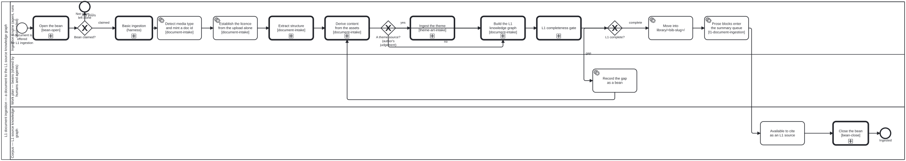

Generated from
folio-assistant-core/processes/library/l1-document-ingestion.bpmnbygen-processes-viz.ts— do not edit here. All processes
L1 document ingestion — a document to the L1 source knowledge graph
Process_L1DocumentIngestion · advisory · 14 step(s)
folio-assistant — L1 document ingestion — a document to the L1 source knowledge graph.
Source of truth: this file. Open it in bpmn.io, Camunda Modeler, or any other
BPMN 2.0 tool. The SVG under docs/assets/img/workflows/ is generated from it
by bun run cat render:bpmn — never hand-edit the SVG.
The
CARRIES THE BODY document-ingestion.bpmn HAD until placement PR6 (bean apcg; owner ruling 3, 2026-09-30: “only basic doc ingestion high level workflow in cat-harness … more detailed doc ingestion/cataloguing methodologies in folio-asst-core”). Every activity id is unchanged, so a reference to Task_Detect or CallActivity_Extract means what it meant.
IT REFINES THE HARNESS FLOW BY CALLING IT. CallActivity_Basic runs the harness’s Process_Ingestion first — accept the upload, put its metadata into the KG, catalogue the asset in library/ — and this process then reads the document into a complete L1 entry. That is the inversion the harness skill library-ingestion describes: the call points DOWN, from core to the harness, and nothing in the harness names this process. The theme branch’s call into the harness’s ingest-theme.bpmn is downward for the same reason; the four ingest-* phases sit beside this file. The method is the l1-document-ingestion skill.

How it connects
- Called by: no call activity names this process
- Calls: Close the bean, Open the bean, Ingestion subprocess — build the L1 knowledge graph, Ingestion subprocess — derive content from the assets, Ingestion subprocess — extract structure, Basic ingestion — an upload to an asset catalogued in library/, Ingestion subprocess — ingest a theme, Ingestion subprocess — the L1 completeness gate
- Presented on: Document ingestion — The pipeline
- Skill:
l1-document-ingestion - Running instances: none recorded
Lanes — who acts
| lane | role | what it does here |
|---|---|---|
| Ingestion Engine (agent, runs unattended) | ingestion-agent | Runs the whole pipeline from CallActivity_Basic through Task_Promote, and then Task_SummaryQueue, where it drains a few prose blocks of the advisory summary queue — including the theme branch, which stays in THIS lane rather than dipping into Lane_2: deciding a document is a theme source is the engine asking its author a question, not a write to the shared work plan. It does not stop at a gap: Gateway_Complete’s ‘gap’ branch leaves this lane only long enough for Lane_2 to record the bean, then Flow_i8 returns control here at CallActivity_Derive rather than ending the run — so an incomplete L1 build is this lane’s problem to keep working until Gateway_Complete says otherwise. |
| Work plan — beans (shared by humans and agents) | work-plan | A one-task detour from the Ingestion Engine’s own loop: it exists as its own lane rather than a step inside Lane_1 specifically so that recording an incomplete L1 build is visible as a write to the SHARED plan — a bean anyone can see and pick up — rather than a private retry the engine keeps to itself. |
| Corpus — L1 source knowledge graph | corpus | The terminal state the whole diagram exists to reach: once Task_Promote lands material in library/ |
Steps
Every one of the 14 step(s) is documented.
| step | lane | skill / sub-process | what it does |
|---|---|---|---|
Basic ingestion (harness)CallActivity_Basic | Ingestion Engine (agent, runs unattended) | calls Basic ingestion — an upload to an asset catalogued in library/library-ingestion | The harness’s document-ingestion.bpmn: accept the upload by a declared route, extract its metadata into the KG, and catalogue the asset in library/ — placed if materialized, recorded as referenced if not. Everything below refines that result for a document. Called, not copied: this was Lane_0 and Task_Place of this diagram until placement PR6 moved them down as the basic flow. |
Detect media type and mint a doc idTask_Detect | Ingestion Engine (agent, runs unattended) | document-intake | Sniff the media type rather than trusting the extension, and mint the doc id from the page-1 arXiv stamp where there is one, else from the filename. |
Establish the licence from the upload aloneTask_Licence | Ingestion Engine (agent, runs unattended) | document-intake | EARLY, by the owner’s ruling on bean 7bg9 (2026-09-20): before any derivation, because library/ is holds: content and anything derived first is committed, so refusing it later is a deletion nobody may take unasked. This step sees only the upload itself — the licence recorded in its intake.json (the same stated / unknown record a library manifest carries) and whether a LICENSE file sits beside it. It never infers a licence from extracted text. The verdict is stated, unknown, or UNDETERMINED, and undetermined is never reported as cleared: the pipeline proceeds and says so, because a licence that only extraction can reveal is a later check’s to find. |
Extract structureCallActivity_Extract | Ingestion Engine (agent, runs unattended) | calls Ingestion subprocess — extract structuredocument-intake | See ingest-extract-structure.bpmn. |
Derive content from the assetsCallActivity_Derive | Ingestion Engine (agent, runs unattended) | calls Ingestion subprocess — derive content from the assetsdocument-intake | See ingest-derive-content.bpmn. Most of this subprocess is not implemented yet. |
Ingest the themeCallActivity_IngestTheme | Ingestion Engine (agent, runs unattended) | calls Ingestion subprocess — ingest a themetheme-art-intake | See ingest-theme.bpmn. The subprocess derives one Theme node with kind sticky|webpage|publication, and refuses a source it cannot complete rather than emitting a partial theme. |
Open the beanCall_BeanOpen | Ingestion Engine (agent, runs unattended) | calls Open the beanbean-coordination | Process_BeanOpen: check before you create, find out whose the bean is, and claim it — or leave it alone when it is someone else’s. The one place a claim is drawn (bean m8gz, owner 2026-10-24); the gateway after this reads which end it reached. |
Close the beanCall_BeanClose | Corpus — L1 source knowledge graph | calls Close the beantodo-manager | Process_BeanClose: end the bean in a state that says why — complete and archive it, scrap it with its reasons and archive it, or record the blocker and hand it back. The one place resolve and archive are drawn (bean m8gz, owner 2026-10-24); placed straight before the end so the engine’s resolve sees nothing left but the archive step. |
Build the L1 knowledge graphCallActivity_BuildKg | Ingestion Engine (agent, runs unattended) | calls Ingestion subprocess — build the L1 knowledge graphdocument-intake | See ingest-build-l1-kg.bpmn. |
L1 completeness gateCallActivity_Gate | Ingestion Engine (agent, runs unattended) | calls Ingestion subprocess — the L1 completeness gatel1-document-ingestion | See ingest-l1-completeness-gate.bpmn. Skill-backed by l1-document-ingestion (2026-09-30, bean 7bg9; the section moved there from the harness’s library-ingestion in placement PR6): its section“What a complete L1 entry holds” names check:l1-complete as the gate andstates its three results. Until then this step named paper-relevance-triage,which never existed, and was left uncovered rather than bound to a guess. The gate contains one adjudication (Task_FlagDrift: real, spurious or source-wrong), and its own Task_Verdict records the answer as a reason against the verdict before returning. So both answers reach this step, and nothing here branches on them; Gateway_Complete branches on the gate’s completeness verdict instead. |
Record the gap as a beanTask_OpenBean | Work plan — beans (shared by humans and agents) | todo-manager | A missing derived artefact is a tracked gap, not a silent omission. The document stays in uploads/ until the gap closes. |
| **Move into library/ `Task_Promote` | Ingestion Engine (agent, runs unattended) | document-intake | The folder name IS the bibliography citation key, so a citation and a directory are the same string. |
Prose blocks enter the summary queueTask_SummaryQueue | Ingestion Engine (agent, runs unattended) | l1-document-ingestion | Owner, 2026-09-24: “Make as QA sidecar as part of general doc ingestion to slowly drain.” Nothing is written to ENQUEUE a block: the queue is derived (every prose block in every declared library, minus those whose summaries.json record is a current draft or confirmation), so a promoted entry is in it the moment its blocks are. A re-ingested document whose text changed re-enters it on its own, because the record’s source_hash no longer matches. What an agent doing ingestion work does here is DRAIN a few: bun run cat summaries:next -- --n K hands it the next K blocks with their text, it writes a short summary of each in its own words, and bun run cat summaries:record writes them into library/ADVISORY, never a gate: this step does not hold up Task_Citeable, and check:l1-complete reports the backlog (`block-summaries`) without failing on it. Confirming or rejecting a draft is a person's act, in `bun run cat narratives`. |
Available to cite as an L1 sourceTask_Citeable | Corpus — L1 source knowledge graph | document-intake | Every knowledge-graph reference to this source now resolves through library/. Authoring and review consume it from here – see authoring-a-document.bpmn. |
Decisions
Every one of the 3 decision(s) is documented.
| decision | what decides it | branches |
|---|---|---|
A theme source? (author’s judgement)Gateway_ThemeSource | Wired 2026-09-23 on the owner’s ruling for bean j66n, choosing “human/agentic judgement at the gateway” over a declared predicate.THE PREDICATE IS DELIBERATELY ABSENT. The alternative on offer was a testable rule — a captured web deployment, or a document that STATES palette and typography rules — and it was refused for the reason the owner had already given when withdrawing xffc/d3yq: “no formal role/theme mapping per se. that is authoring (human/agentic) decision/judgement.”So this gateway is answered by whoever is ingesting, not computed. An arbitrary branded PDF is not a theme source because a rule says so; it is not one because the author says it is not. WHY IT IS A GATEWAY AND NOT A FILTER INSIDE THE SUBPROCESS. ingest-theme.bpmn starts at “Theme source in hand” and can refuse as incomplete. Routing every document into it would make “this is not a theme” and “this theme is malformed” the same refusal, and the second is a defect while the first is the normal case. | yes → Ingest the theme no → Build the L1 knowledge graph |
Bean claimed?GW_BeanYours | Reads which end Process_BeanOpen reached. claimed: the bean is in progress and this process works it. not yours: a sibling session or a human holds it, nothing was written to it, and this process stops here rather than work a bean it does not own (bean-coordination). | claimed → Basic ingestion (harness) not yours → Not yours — left alone |
L1 complete?Gateway_Complete | The verdict of the L1 completeness gate. gap records the gap as a bean; complete promotes the source into library/ | gap → Record the gap as a bean complete → Move into library/ |